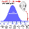
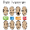

首页
网站说明
心理测试
关于我们
•
联系我们
•
隐私条款
•
友情链接
•
广告合作
推荐
爱情
个性
趣味
健康
专业
付费
你有让恋人变乖的能力吗
15803 人测试过
2014-07-26 发布
其实我们都很希望我们的情人像猫一样的乖乖的听话喔！不过你到底有没有这个本事呢？我们今天随堂测验就进入你的潜意识测验一下。
开始测试
猜你喜欢：
换一换
MBTI职业性格测试
由美国的心理学家Katherine Cook Briggs (1875-1968) 和她的心理学家女儿Isabel Briggs Myers根据瑞士著名的心理分析学家Carl G. Jung (荣格)的心理类型理论和她们对于人类性格差异的长期观察和研究而著成。...
参与人数：36420
题量： 28
NLP行为风格测试
Neuro-Linguistic-Programming神经语言程序学(简称：NLP)是对人类主观经验的研究。更直白地说，NLP就是从破解人类的语言及思维模式入手，独创性地将他们的思维模式进行解码后，发现了人类思想、情绪和行为背后的规律，进而发现这些行为与个性...
参与人数：17797
题量： 10

国际标准IQ测试
智商，就是IQ（Intelligence Quotient的简称)，通俗地可以理解为智力，是指数字、空间、逻辑、词汇、创造、记忆等能力，它是德国心理学家施特恩在1912年提出的。智商表示人的聪明程度：智商越高，则表示越聪明。想检验自己的智商是多少吗？这并不困难...
参与人数：42785
题量： 30

情绪识别能力测试
表情是世界通用语。不分国界不分种族不分性别，大家通用一套表情。可读懂表情不是一个简单的技术活，它体现了你情商的重要指标：共情力。所以，以下10道题，你能答对多少，来练练手吧！
参与人数：23498
题量： 10
你是折磨人的情人吗？
你是个折磨人的情人吗？想要知道的话，快点接着往下看吧！
参与人数：15166
题量： 1